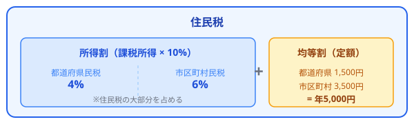
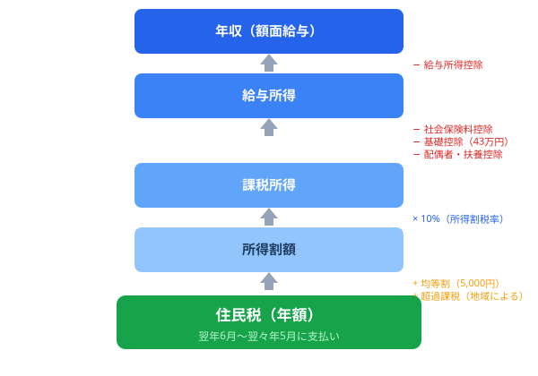

住民税計算シミュレーター
年収から住民税・所得税を無料で自動計算
年収（給与所得）と家族構成を入力するだけで、住民税・所得税・社会保険料・手取り額を自動計算。所得割・均等割の内訳や控除の詳細を円グラフ付きで表示します。登録不要・無料・ブラウザだけで完結します。
年収の内訳
計算の詳細
住民税とは？
住民税は、都道府県や市区町村に納める地方税で、前年の所得に基づいて課税されます。「所得割」と「均等割」の2つで構成され、会社員の場合は毎月の給与から天引き（特別徴収）されます。所得税と異なり、住民税は翌年の6月から支払いが始まるため、退職後に予想以上の住民税がかかることがあります。
住民税の税率は全国ほぼ一律10%（都道府県民税4%+市区町村民税6%）で、所得税のような累進課税ではありません。ただし、基礎控除額が所得税（48万円）より低い43万円であるなど、控除額に違いがあります。
住民税の構成

住民税の計算フロー
年収から住民税が決まるまでの流れを図解します。

住民税計算ツールの使い方
- 年収（額面）を入力 — ボーナスを含む年間の額面給与を入力します
- 年齢区分を選択 — 40歳以上の場合は介護保険料が加算されます
- 家族構成を入力 — 配偶者の有無、扶養親族の人数を入力します
- 「住民税・所得税を計算」をクリック — 住民税・所得税・手取り額が円グラフ付きで表示されます
所得税の税率表（累進課税7段階）
所得税は累進課税制度で、課税所得が増えるほど高い税率が段階的に適用されます。
| 課税所得 | 税率 | 控除額 | 速算式 |
|---|---|---|---|
| 195万円以下 | 5% | 0円 | 課税所得 x 5% |
| 195万円超〜330万円以下 | 10% | 97,500円 | 課税所得 x 10% - 97,500円 |
| 330万円超〜695万円以下 | 20% | 427,500円 | 課税所得 x 20% - 427,500円 |
| 695万円超〜900万円以下 | 23% | 636,000円 | 課税所得 x 23% - 636,000円 |
| 900万円超〜1,800万円以下 | 33% | 1,536,000円 | 課税所得 x 33% - 1,536,000円 |
| 1,800万円超〜4,000万円以下 | 40% | 2,796,000円 | 課税所得 x 40% - 2,796,000円 |
| 4,000万円超 | 45% | 4,796,000円 | 課税所得 x 45% - 4,796,000円 |
※ 上記に加え、復興特別所得税（所得税額の2.1%）が加算されます。
住民税の計算の仕組み
住民税は以下の手順で計算されます。
- 給与所得を算出：年収（額面）から給与所得控除を差し引きます
- 課税所得を算出：給与所得から各種控除（基礎控除43万円、社会保険料控除、配偶者控除、扶養控除など）を差し引きます
- 所得割を計算：課税所得 x 10%（都道府県民税4% + 市区町村民税6%）
- 均等割を加算：年額5,000円（都道府県民税1,500円 + 市区町村民税3,500円）
- 住民税 = 所得割 + 均等割
所得税との大きな違いは、税率が一律10%であること、基礎控除が43万円（所得税は48万円）であること、そして前年の所得に対して課税されることです。
主要な所得控除一覧
所得税と住民税では控除額が異なるものがあります。主要な控除を比較します。
| 控除の種類 | 所得税の控除額 | 住民税の控除額 | 備考 |
|---|---|---|---|
| 基礎控除 | 48万円 | 43万円 | 合計所得2,400万円以下の場合 |
| 配偶者控除 | 38万円 | 33万円 | 配偶者の所得48万円以下 |
| 扶養控除（一般） | 38万円 | 33万円 | 16歳以上の扶養親族 |
| 扶養控除（特定） | 63万円 | 45万円 | 19歳〜22歳の扶養親族 |
| 社会保険料控除 | 全額 | 全額 | 健康保険・厚生年金・雇用保険 |
| 給与所得控除 | 55万〜195万円 | 年収に応じた控除額 | |
| 医療費控除 | 実額（上限200万円） | 年間医療費-10万円 | |
| ふるさと納税 | 寄附額-2,000円 | 所得税+住民税から控除 | |
住民税計算に関するよくある質問
住民税は年収いくらから課税されますか？
住民税の非課税限度額は自治体によって異なりますが、一般的に単身者の場合は給与収入が約100万円以下（合計所得45万円以下）で非課税になります。扶養親族がいる場合は「35万円 x（扶養人数+1）+ 32万円」以下で非課税になります。均等割のみ課税される範囲もあります。
住民税を安くする方法はありますか？
住民税を合法的に軽減する主な方法は、ふるさと納税（住民税から控除）、iDeCo（掛金全額が所得控除）、医療費控除、生命保険料控除などの各種控除を漏れなく申告することです。また、配偶者控除や扶養控除の適用漏れがないか確認しましょう。
退職後の住民税はどうなりますか？
住民税は前年の所得に基づいて課税されるため、退職後も前年の所得に応じた住民税を支払う必要があります。退職時に特別徴収から普通徴収に切り替わり、一括または分割で納付します。収入が減った翌年には住民税も下がります。
所得割と均等割の違いは何ですか？
所得割は課税所得に応じて課税される部分で、税率は一律10%（都道府県4%+市区町村6%）です。均等割は所得に関係なく定額で課税される部分で、年額5,000円（都道府県1,500円+市区町村3,500円）です。低所得者は均等割も非課税になる場合があります。
住民税と所得税で基礎控除が違うのはなぜですか？
住民税の基礎控除は43万円、所得税は48万円と5万円の差があります。これは歴史的な経緯と制度設計の違いによるものです。住民税は地域の行政サービスを広く負担する趣旨があるため、控除額がやや低く設定されています。この差により、同じ年収でも住民税の課税所得が所得税より5万円多くなります。